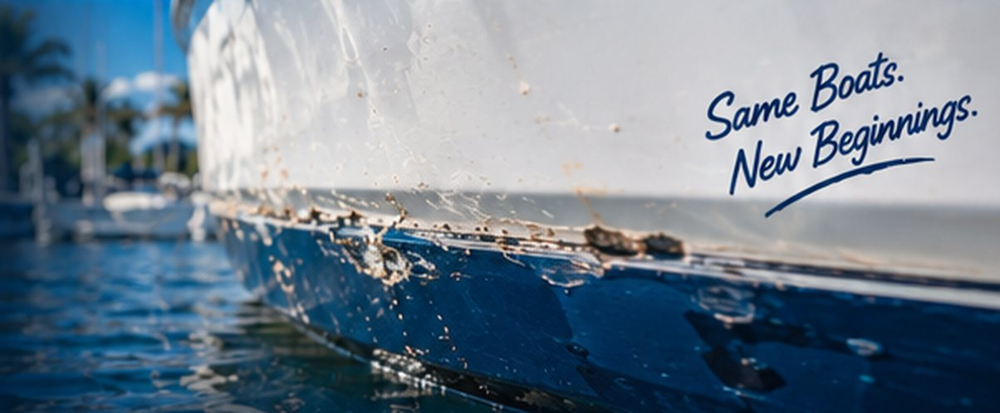
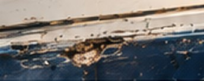
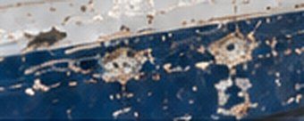
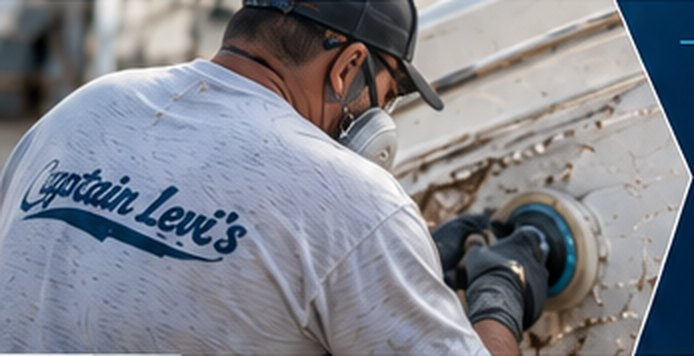

Small Waterline Chips
Minor chips and nicks along the waterline from dock bumps or floating debris.
Learn More
Waterline chips are more than cosmetic. They can expose the fiberglass to constant water, UV rays and pressure, leading to blistering, delamination and costly repairs. We repair waterline chips with marine-grade gelcoat and precise color matching to restore a smooth, durable, factory-like finish.
The waterline takes a constant beating from waves, docks, trailers and marine growth. Even small chips can allow water to penetrate the fiberglass, causing blistering, core damage and delamination over time. Our professional waterline chip repairs restore the finish, seal the exposed fiberglass, and protect your hull from further damage.
Minor chips and nicks along the waterline from dock bumps or floating debris.
Learn More
Larger chips with exposed fiberglass that need proper laminate and gelcoat repair.
Learn More
Restore areas with repeated chips, pitting or widespread surface damage.
Learn More
We evaluate the size, depth and location of the chip and check for water damage.
Rebuild with marine-grade materials, fair the surface and shape to match the hull.
We match your gelcoat using professional color matching for a seamless finish.
We blend the repair, wetsand and polish for a smooth, glossy, durable finish.
See real examples of waterline chip repairs we’ve completed for boaters across Tampa Bay.
With over 50 years of fiberglass repair experience, we deliver high-quality results that keep your boat looking its best. From small chips to full cosmetic restorations, we’re the team boaters across Tampa Bay trust.
It depends on the size and depth of the chip, whether water has reached the laminate, and how involved the color match is. Send us a few photos or have us take a look, and we’ll give you a free, no-obligation quote.
Our goal is a repair you can’t find. We fair the area to the hull’s shape, match the color and gloss of your stripe or bottom, then wet sand and polish so it blends with the rest of the waterline.
Yes. We tint the gelcoat to your hull, including stripes and finishes that have faded or oxidized over time, then blend the edges so the repair disappears into the surrounding color.
A few small chips can often be handled in a single visit. If the fiberglass underneath is wet, it has to dry out before we rebuild it, and each layer of gelcoat needs time to cure. We’ll give you a timeline with your quote.
They can. The waterline sits in constant contact with water, so an open chip lets moisture into the laminate, which can lead to blistering, core damage and delamination. Sealing a chip early is far cheaper than repairing what it causes. See our blister & osmosis repair page for more.
Get a free quote or talk directly with Captain Dave about your boat.
Have waterline chips you want looked at, need a quote, or ready to schedule? Fill out the form or give us a call — we’ll get back to you as soon as possible. Your boat deserves the best, and we’re here to make it happen.
Tell us a little about your project and we’ll get back to you quickly.